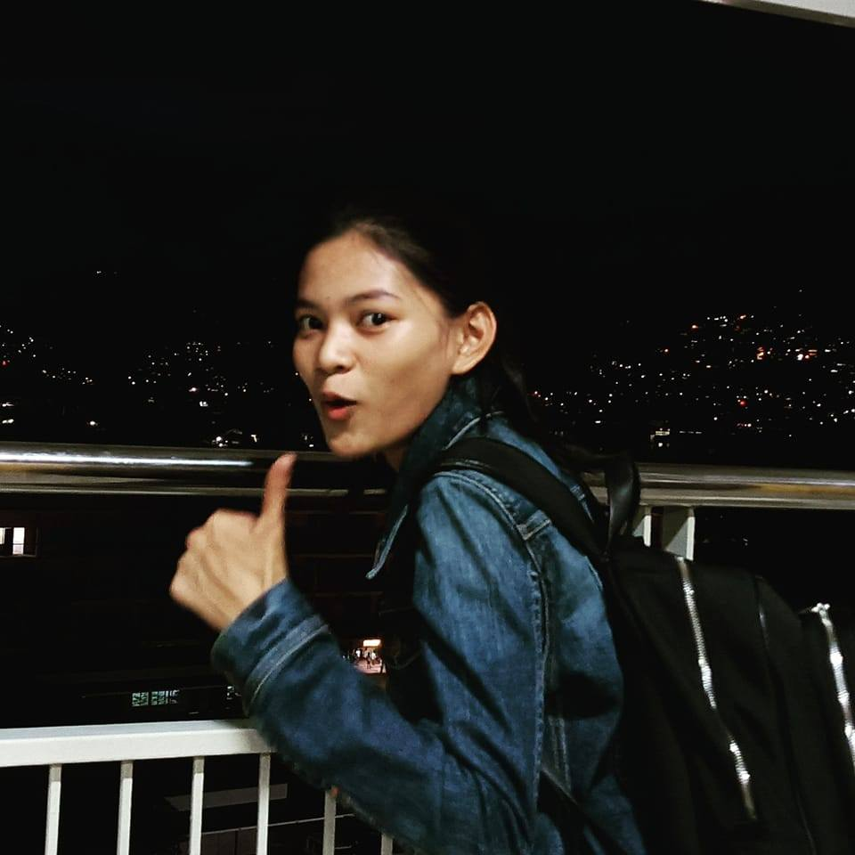

I'm Kesha Jane L. Ceniza, a 2nd year Computer Science student at Cebu Institute of Technology - University. Jack of all trades, and proud of it.
My roots are in the arts:
That creativity carries over into how I build things in tech, pulling me toward full-stack development and building experiences that are as beautiful as they are functional. With AI in the mix, what I can build feels limitless.
I'm a maximalist at heart. The best work has personality in it.
Lapu-lapu City